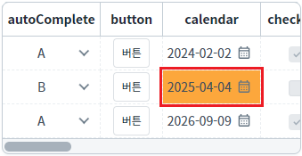
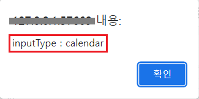

GridView의 'getColumnType' 메소드를 사용하여 바디 컬럼의 'inputType' 속성에 설정된 값을 반환받는 예제입니다.
GridView 컬럼의 속성 'inputType' 설정 값 반환받기
GridView의 셀을 선택(클릭)하고, "선택된 셀의 'inputType' 반환받기" 버튼을 클릭하면 브라우저 'alert'으로 셀의 'inputType'을 확인할 수 있습니다.
1
STEP 1: 초기 상태를 확인합니다.
GridView의 'calendar' 컬럼의 2번째 행이 선택된 상태입니다.
Image 1.브라우저(Chrome) 실행 예시

2
STEP 2: 선택된 셀의 'inputType'을 확인합니다.
"선택된 셀의 'inputType' 반환받기" 버튼을 클릭합니다.3
STEP 3: 실행된 결과를 확인합니다.
'inputType'이 브라우저 alert으로 출력됩니다. 출력 값 : 'inputType : calendar'
Image 2.브라우저(Chrome) 실행 예시

GridView의 'getColumnType' 메소드를 사용하여 스크립트를 작성합니다. 세부 설정은 아래의 스크립트 예시에 작성되어 있습니다.
Example 1.Script
//예제 파일에서는 스크립트 scwin.btn_exam1_onclick에 작성되어 있습니다. // GridView 'grd_exam'의 선택된 컬럼의 Index를 반환 받습니다. var numColIndex = grd_exam.getFocusedColumnIndex(); // 선택된 셀이 없는 경우 안내 로직. if (numColIndex !== 0 && !numColIndex) { alert("GridView에 셀을 선택(클릭)하세요."); return; } // GridView 'grd_exam'의 바디 컬럼 속성 'inputType'의 설정 값을 반환받습니다. var strInputType = grd_exam.getColumnType(numColIndex);
getColumnType( colIndex )
getFocusedColumnIndex( )